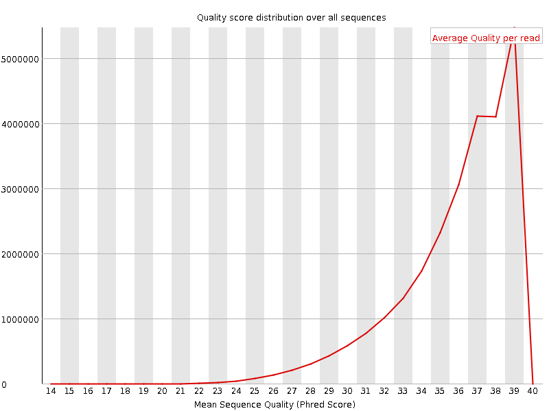
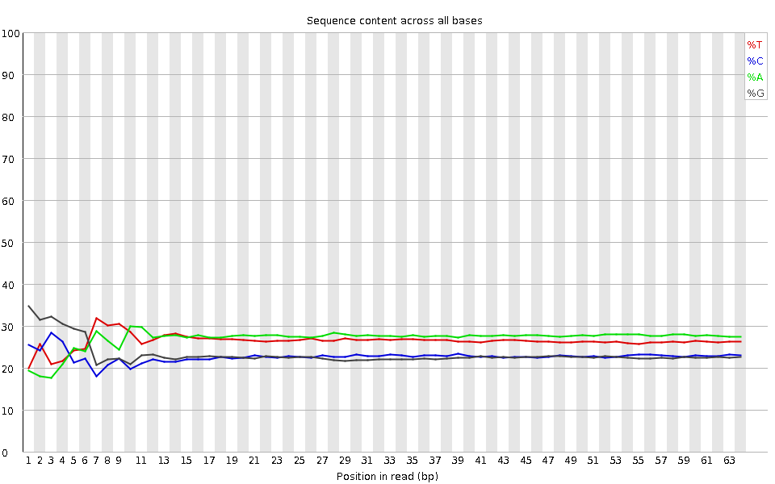
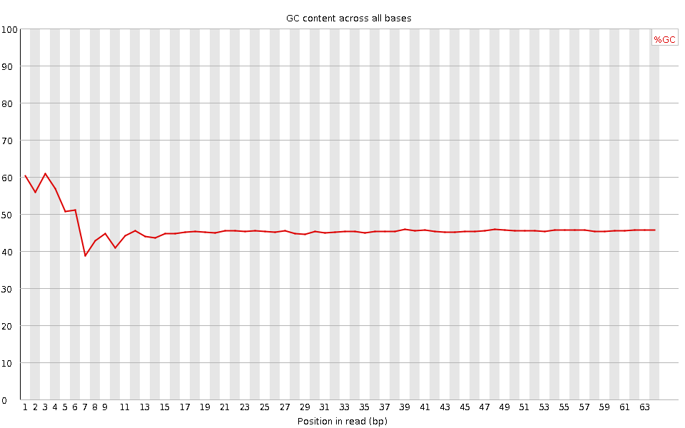
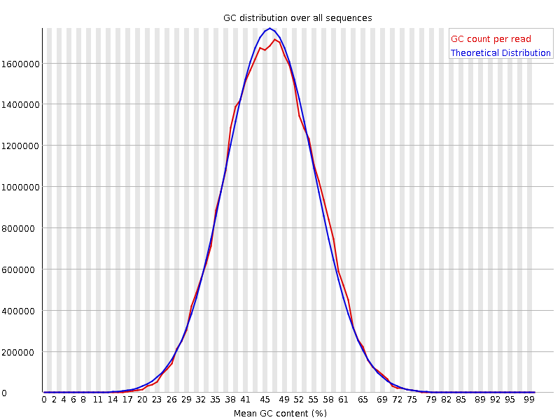
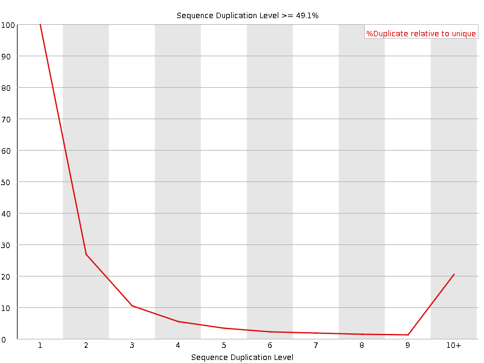
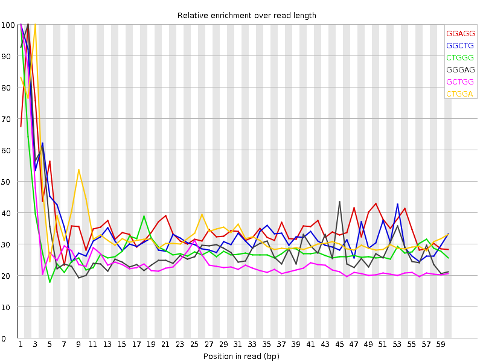

![[OK]](Icons/tick.png) Basic Statistics
Basic Statistics
| Measure | Value |
|---|---|
| Filename | SRR307931_pe_1.f.fastq |
| File type | Conventional base calls |
| Encoding | Sanger / Illumina 1.9 |
| Total Sequences | 25883497 |
| Filtered Sequences | 0 |
| Sequence length | 64 |
| %GC | 46 |
Per base sequence quality

Per sequence quality scores

![[WARN]](Icons/warning.png) Per base sequence content
Per base sequence content

![[FAIL]](Icons/error.png) Per base GC content
Per base GC content

Per sequence GC content

Per base N content

Sequence Length Distribution

Sequence Duplication Levels

Overrepresented sequences
| Sequence | Count | Percentage | Possible Source |
|---|---|---|---|
| GCTGGATAGTAGGTAGGGACAGTGGGAATCTCGTTCATCCATTCATGCGCGTCACTAATTAGAT | 33421 | 0.12912088347258485 | No Hit |
Kmer Content

| Sequence | Count | Obs/Exp Overall | Obs/Exp Max | Max Obs/Exp Position |
|---|---|---|---|---|
| GGAGG | 2654295 | 2.1070836 | 5.7585106 | 2 |
| GGCTG | 2462185 | 2.0471544 | 5.984359 | 1 |
| CTGGG | 2387055 | 1.9846884 | 6.8339224 | 1 |
| GGGAG | 2345780 | 1.8621725 | 6.270537 | 2 |
| GCTGG | 2217285 | 1.8435352 | 7.1960964 | 1 |
| CTGGA | 2482200 | 1.7718098 | 5.103643 | 3 |
| GGCAG | 2163270 | 1.7552862 | 5.8900642 | 2 |
| GTGGG | 2067180 | 1.681526 | 8.830538 | 1 |
| GGGGA | 1992280 | 1.5815501 | 7.5841823 | 1 |
| GGGTG | 1929190 | 1.5692794 | 6.5376143 | 2 |
| GGGGG | 1690845 | 1.5634573 | 10.406313 | 1 |
| GGGCA | 1924675 | 1.5616894 | 5.9202485 | 1 |
| TGGGG | 1769800 | 1.4396253 | 6.8219113 | 1 |
| GGGGT | 1700070 | 1.382904 | 7.6582074 | 3 |
| GGGCT | 1645325 | 1.3679858 | 5.181439 | 3 |
| GGGGC | 1082045 | 1.0226622 | 5.4319816 | 2 |
| CGGGG | 889295 | 0.8404903 | 7.5743794 | 1 |